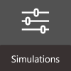
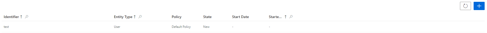
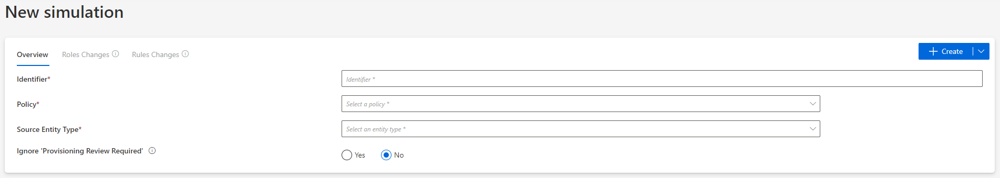
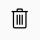
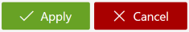

Identity Manager's simulations gather roles and rules which are to be created, modified or deleted, without being inserted in the actual role model straight away. More specifically, a simulation can involve:
Access the simulation list by clicking on Simulations on the home page, in the Configuration section.


Create a new simulation by clicking on the addition button at the top right corner.
Fill in the fields.

Click on + Create.
Perform changes through the Roles Changes and Rules Changes tabs and the following icons, respectively for addition, modification and deletion:

At any time, you can click on the line of a previously made change to access its description, even click on Cancel to erase it.
Click on Start to launch the simulation.
After a few seconds, click on Refresh to display the simulation results.
Observe the results in the overview and in the Excel report available via the Download button.
Shift from Simulation to Production
After all needed changes have been simulated, you can decide to apply or cancel them.

Then, the simulation is no longer active.
Clicking on Apply applies the simulated changes to the role model. You need to launch the
Compute Role Model Task
to observe the actual changes in users' entitlements.
Impact of Modifications
Once you've applied or canceled the changes of a simulation, said simulation is no longer active. If you still need to simulate changes on the same policy, you can create a new simulation.
Deleting a simulation doesn't impact the role model. It simply undoes the simulated changes which haven't been applied yet.
Verify Modification
In order to verify the process, check that the roles and rules are created with the right parameters.
For roles, click on Access Roles on the home page in the Configuration section.
Select the type of role that you want to check, and find the roles you created inside the right category and with the right parameters.
For rules, click on Access Rules on the home page in the Configuration section.
Select the type of rule that you want to check, and find the rules you created with the right parameters.